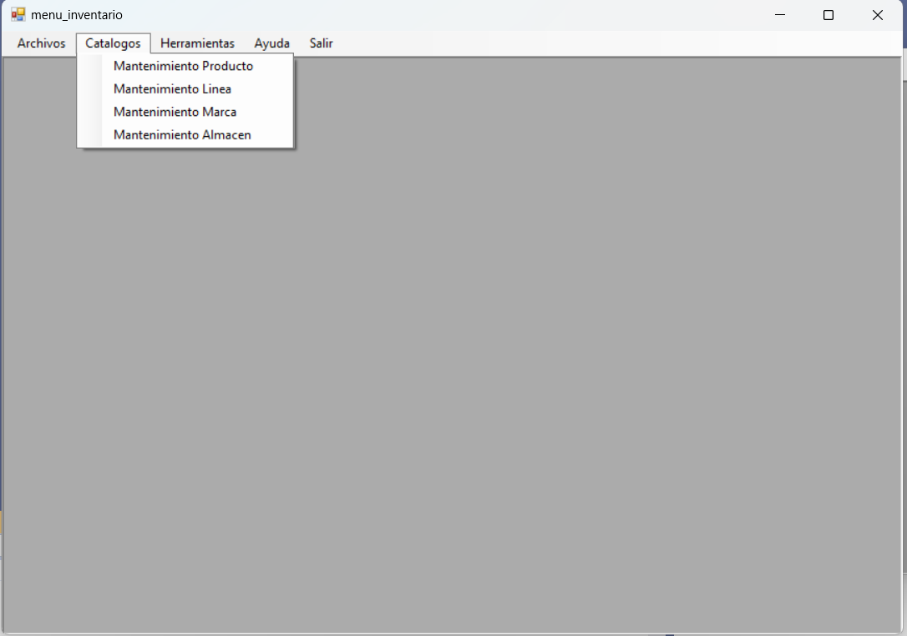
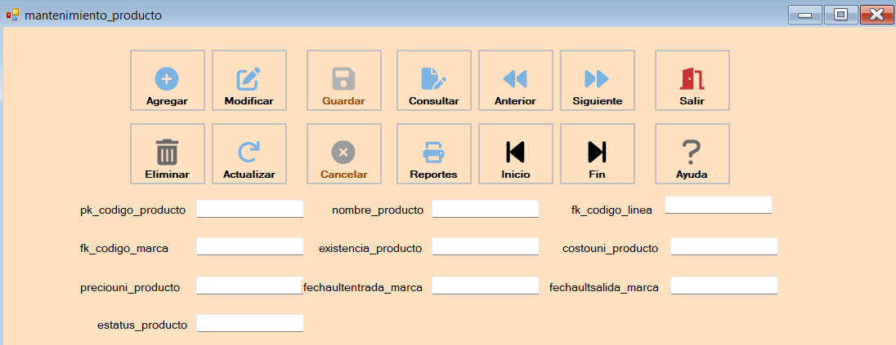

Los mantenimientos nos permiten visualizar, agregar, modificar y eliminar registros ingresados en la base de datos para el mantenimiento se ingresa en el siguiente botón
Si se quiere insertar un dato se debe de presionar el boton agregar e ingresar los datos que se encuentran en la parte posterior del form como se muestra en la imagen y luego se presiona guardar. Si se quiere modifiar se debe de buscar el registro con siguiente y anterior luego se presiona el boton modificar se cambian los datos deseados y se presiona guardar. Por ultimo punto si se quiere eliminar se busca de la misma manera el registro deseado y se presiona el boton eliminar para que se elimine el registro selecionado y luego guardar. Cabe mencionar que despues de cada acción se debe de presionar el botón actualizar para que se muestren los cambios en la tabla.
